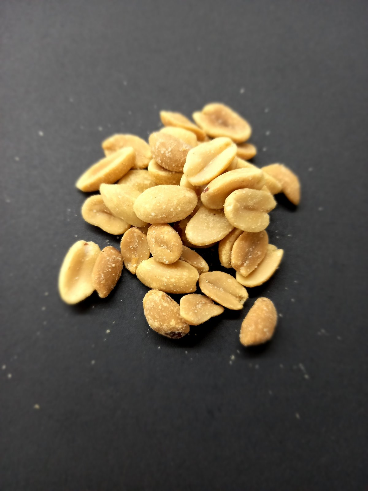
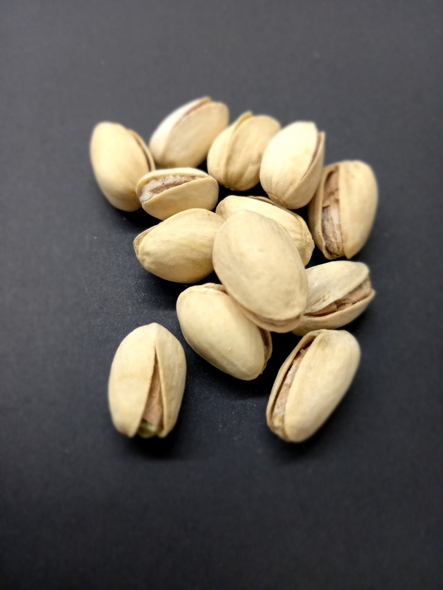
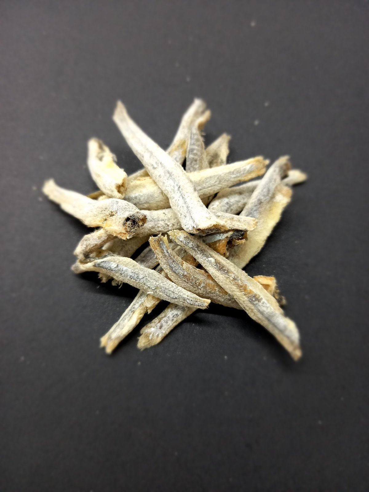
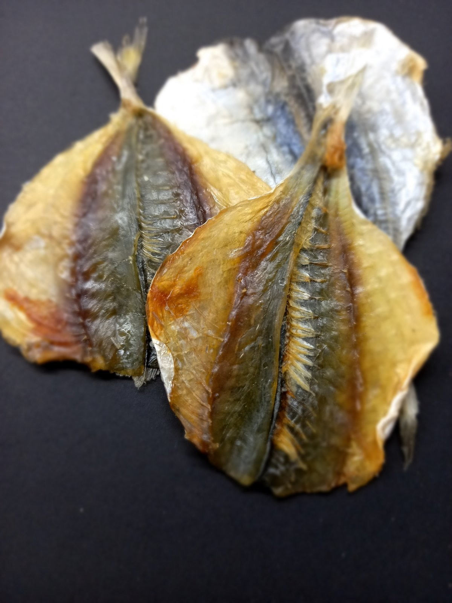
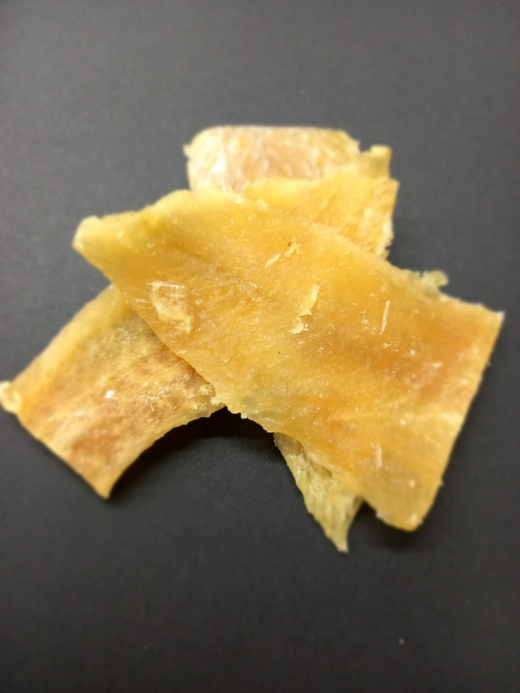
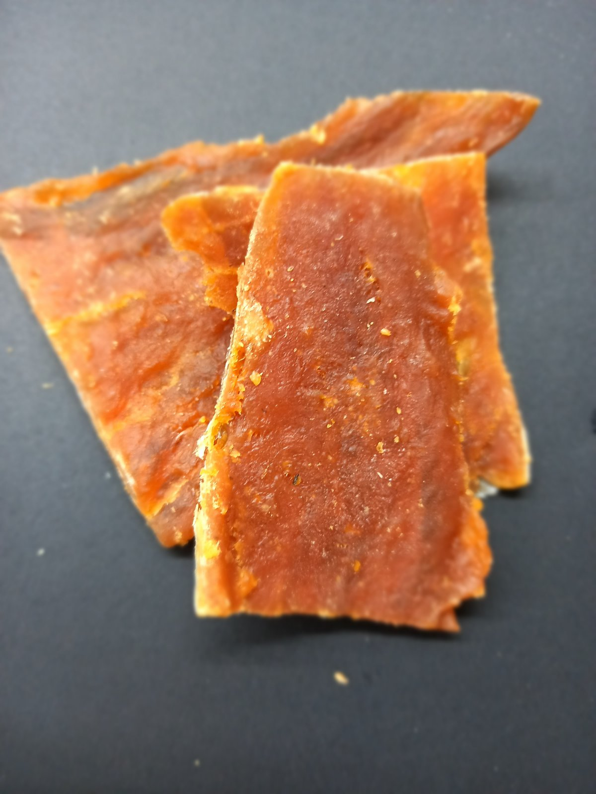
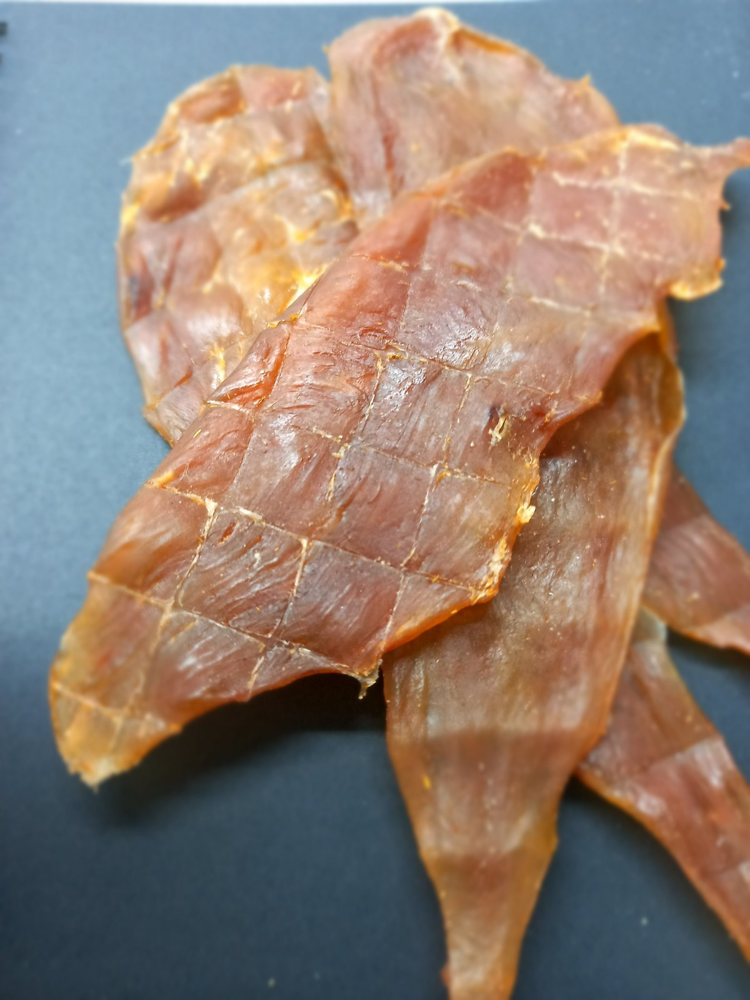

Асортимент
-

Солоний арахіс
Ціна: 180 грн/кг
Популярний хрумкий снек, виготовлений із добірного обсмаженого арахісу з додаванням солі. Має насичений смак, високу поживну цінність та ідеально підходить для швидкого перекусу, пікніків, вечірок і відпочину з напоями. Арахіс добре втамовує голод та надає енергії завдяки великому вмісту білків і корисних жирів.
-

Каліфорнійська фісташка
Ціна: 500 грн/кг
Високоякісні ядра, вирощені в екологічно чистих районах Каліфорнії. Мають ніжний смак і високу поживну цінність. Фісташки багаті білком, корсними жирами, вітамінами групи В та антиоксидантами. Підходить для перекусів, спортивного харчування, салатів та десертів. Чудово поєднується з вином та сирними тарілками.
-

Анчоус
Ціна: 360 грн/кг
Це класичний середземноморський продукт із виразним солоним смаком та ароматом. Рибу засолюють традиційним способом, завдяки чому вона зберігає щільність, поживність і характерну пікантність. Чудово підходить для салатів (особливо "Цезар"), пасти, піци, соусів та холодних закусок.
-

Смугастик
Ціна: 510 грн/кг
Неперевершений хрусткий снек з яскравим смаком солі, що дарує справжнє задоволення кожному перекусу. Його апетитні сужки роблять смак ще виразнішим, а легка солоність ідеально підходить до пива, напоїв чи просто для перекусу в будь-який час. Смак, який не можливо забути!
-

Тріска
Ціна: 480 грн/кг
Ніжне та соковите філе з насиченим солоним смаком, що зберігає природну текстуру та аромат морської риби. Ідеально підходить для традиційних страв або як самостійна закуска для поціновувачів справжньої рибної насолоди.
-

Янтарна з перцем
Ціна: 430 грн/кг
Вишукана риба з золотистим відтінком, ніжною текстурою та яскравим смаком. Легка пікантна нотка перцю підкреслє солоність і дарує насичений аромат, роблячи її ідеальною закускою або доповненням до страв для справжніх гурманів.
-

Курячі джерки
Ціна: 600 грн/кг
Соковиті та пряні шматочки курячого філе, повільно висушені до хрусткої текстури. Ідеальна закуска для перекусу вдома, на прогулянці або під час активного відпочинку. Насичений смак та аромат роблять їх улюбленими серед поціновувачів м'ясних снеків.